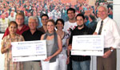
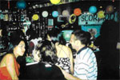
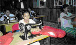
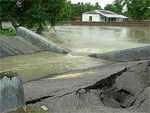

|
Donnerstag. 25. September 2008 |
FAIRgabe statt „Geiz ist geil“!
NRO und Gewerkschaften fordern soziale, ökologische und faire öffentliche Beschaffung |
Umwelt- und entwicklungspolitische Nichtregierungsorganisationen sowie Gewerkschafter aus dem Netzwerk CorA (Corporate Accountability) fordern vom Deutschen Bundestag eine verbindliche Verankerung sozialer, ökologischer und entwicklungspolitischer Kriterien in der Öffentlichen Auftragsvergabe.
Anlässlich der ersten Lesung eines Gesetzentwurfs der Bundesregierung zur „Modernisierung des Vergaberechtes“ erklärte Dr. Klaus Schilder, Referent für Entwicklungspolitik bei terre des hommes: „Ein Großteil der 360 Milliarden Euro öffentlicher Aufträge in Deutschland werden noch nach einer ‚Geiz ist geil’-Logik vergeben. Der niedrigste Preis zählt – egal ob der Schutz von Kindern, faire Lohn- und Arbeitsbedingungen, elementare Menschenrechte oder der Klimaschutz beachtet werden. Damit muss Schluss sein; Deutschland soll endlich sozial, ökologisch und entwicklungsorientiert beschaffen!“
Johanna Fincke von der Christlichen Initiative Romero (CIR) ergänzte: „Wir weisen heute vor dem Reichstag auf die Realität der Arbeiter hin, die noch im Kindesalter Steine für die Gassen deutscher Städte aus den Steinbrüchen Indiens oder Chinas brechen, die ohne gewerkschaftliche Rechte die Arbeitsbekleidung für kommunale Angestellte nähen oder Blumen für den Bundestag pflücken. Eine sozial verantwortungsvolle Reform des Vergaberechtes kann helfen, diese brutale Ausbeutung zu beenden!“
Peter Fuchs, Mitarbeiter von WEED (Weltwirtschaft, Ökologie & Entwicklung) verdeutlichte die Forderungen des CorA-Netzwerks für Unternehmensverantwortung zur bevorstehenden Gesetzesnovelle: „Wirklich modern wäre ein Vergabegesetz“, so Fuchs, „das dem Lohn- und Sozialdumping Einhalt gebietet, klare ökologische Prinzipien, die wichtigsten ILO-Standards sowie den Fairen Handel in die Regeln für die Öffentliche Auftragsvergabe in Deutschland aufnimmt! Die bloße Kann-Formulierung des Gesetzentwurfes von Wirtschaftsminister Glos reicht überhaupt nicht aus. Zudem brauchen wir nicht nur schöne Gesetzesformulierungen, sondern klare Umsetzungspläne und Kontrollinstrumente von der Regierung!“ Nach langem Streit zwischen den Bundesministerien und gegen den Widerstand der Wirtschaftslobby heißt es derzeit im Gesetzentwurf, es „können zusätzliche Anforderungen an Auftragnehmer gestellt werden, die insbesondere soziale, umweltbezogene oder innovative Aspekte betreffen.“ Der Bundestag wird in den kommenden Wochen zu entscheiden haben, ob es bei dieser Kann-Regelung bleibt oder nicht.
Weitere Informationen:
|
Dienstag. 16. September 2008 |
Philippinen: terre des hommes-Projektpartnerin entführt
Hilfsorganisation fordert Freilassung der Geiseln |
Eine Mitarbeiterin eines von terre des hommes Deutschland geförderten Projektes ist am Montagabend auf der Insel Basilan (Philippinen) entführt worden. Wie das entwicklungspolitische Kinderhilfswerk dazu in Osnabrück mitteilte, wurde die Frau zusammen mit vier anderen Mitarbeitern einer Nichtregierungsorganisation in der Region Tipo-Tipo von bisher Unbekannten verschleppt. Über die Motive der Täter gibt es bisher keine Informationen. Wie Michael Heuer, Sprecher der Organisation, in Osnabrück mitteilte, bemüht man sich um eine Kontaktaufnahme mit den Entführern. terre des hommes rief die Entführer auf, die Geiseln unverzüglich freizulassen.
Auf der Insel kommt es immer wieder zu Geiselnahmen. Basilan wurde weltweit auch als wichtiger Stützpunkt der 1991 gegründeten terroristischen Islamistengruppe Abu Sayyaf bekannt. terre des hommes engagiert sich in der Region gegen die Zwangsrekrutierung von Kindersoldaten und fördert humanitäre Projekte, die das friedliche Zusammenleben zwischen unterschiedlichen Religionsgemeinschaften fördern.
|
Montag. 15. September 2008 |
Laufen für Mitmenschen: Gaggenauer Mercedes-Azubis spenden insgesamt 5.000 Euro |
|
 |
| Heinz Wolf von terre des hommes (3. von li.) und Rudolf Fritz von der Lebenshilfe (re.) freuen sich �ber Spenden von je 2.500 Euro aus dem Projekt "Laufen f�r einen guten Zweck" |
Frohe Gesichter gab es im großen Sitzungszimmer des Betriebsrats des Mercedes-Benz Werks Gaggenau. Rudolf Fritz, Geschäftsführer der Lebenshilfe Kreisvereinigung Rastatt/Murgtal sowie Murgtal-Werkstätten & Wohngemeinschaften, und Heinz Wolf, Vorsitzender von "terre des hommes Murgtal/Mittelbaden" konnten jeweils einen Scheck über den Betrag von 2 500 Euro entgegennehmen.
"Laufen für einen guten Zweck" hieß das Motto eines Projekts der Jugend- und Auszubildenden Vertretung des Werks Gaggenau, das am 13. Juli auf dem „Benzplatz" verwirklicht wurde. Den Erlös dieses Spendenlaufs hatten die Jugendlichen selbst für diese beiden Organisationen bestimmt - eine regionale und eine internationale sollten es sein. Für jede Runde der Laufstrecke, die über den Murgdamm und einen Teil des "Elefantenweges" führte, spendeten die Läufer einen Euro.
Das Interesse an der Teilnahme sei überwältigend gewesen, sagte Melanie Hartmann, Vor¬sitzende der Jugend- und Auszubildendenvertretung, aus jeder Altersgruppe hätten sich die Menschen beteiligt, die Älteren wären die Strecke auch einfach nur abgegangen.
Die Lebenshilfe Rastatt/Murgtal wird diesen Betrag für die „Offene Hilfe" verwenden, deren Ziel es ist, Menschen mit geistiger Behinderung ein weitgehend selbst bestimmtes Leben innerhalb der Gemeinschaft zu ermöglichen. An diesem Spendenlauf hätten auch 50 behinderte Menschen teilgenommen. Es habe nur Gewinner bei dieser Veranstaltung gegeben, sagte Rudolf Fritz von der Lebenshilfe.
Für die Kinder in Vietnam ist die Spende an terre des hommes Murgtal/Mittelbaden gedacht. Die Organisation unterhält dort Rehazentren für Behinderte, Querschnittsgelähmte und Unfallopfer sowie für unterernährte, halb verhungerte und kranke Waisen oder ausgesetzte Kinder. Ferner erhalten noch die vielen als Spätfolgen des im Vietnam-Krieg eingesetzten Entlaubungsmittels "Agent Orange" mit Behinderungen zur Welt gekommenen Kinder Pflege und Unterstützung.
BNN vom 01.08.2008 |
Montag. 15. September 2008 |
Geburtstagsspende von Heinz Wolf: 1.000 Euro für Projekt gegen Mädchenhandel in Asien |
Anlässlich seines 60. Geburtstages spendete Heinz Wolf, Sprecher und Initiator der Arbeitsgruppe Murgtal / Mittelbaden, 1.000 Euro für das "Cambodian Women’s Crisis Center" (CWCC) in Kambodscha, einer Hilfsorganisation für gehandelte und misshandelte Frauen und Mädchen:
Das Ticket in die Freiheit
Mädchenhandel in Südostasien
Wenn Sreina ihre Geschichte erzählt, füllen sich ihre Augen mit Tränen. Denn erzählen heißt erinnern, und erinnern tut weh. Viele Erinnerungen würde das Mädchen aus Kambodscha am liebsten verscheuchen wie ein lästiges Insekt, doch das funktioniert nicht: Zu tief haben sich die Bilder und Gefühle zu dem Erlebten eingegraben. Denn Sreinas Geschichte handelt davon, wie sie in ein Bordell verkauft und dort missbraucht wurde. Es ist gleichzeitig auch die Geschichte Millionen anderer Jugendlicher, die auf der ganzen Welt wie eine Ware gehandelt und ausgenutzt werden.
Dabei schien für Sreina alles so gut anzufangen: »Eine Frau kam in die Hütte meiner Großmutter, bei der ich lebte seit meine Mutter tot ist. Diese Frau bot mir einen Job in Thailand an, als Nudelverkäuferin.« Umgerechnet 70 Euro hätte die damals 16-Jährige monatlich bekommen. Viel Geld für jemanden, der in einer kambodschanischen Kleinstadt lebt. Kambodscha gehört zu den ärmsten Ländern der Erde. Fast 30 Jahre dauerte der Bürgerkrieg und hat eine schwere Hypothek hinterlassen. Soziale Institutionen, Schulen, Tempel und Märkte wurden zerstört, ebenso wie Familien und Dorfgemeinschaften.
Weil es kaum Arbeit gibt und Eltern Mühe haben, den Lebensunterhalt der Familien zu sichern, ist es selbstverständlich, dass Kinder ebenfalls fürs Geldverdienen zuständig sind. Bevor die unbekannte Frau auftauchte und von einem Job in Thailand erzählte, hatte Sreina in ihrem Heimatort Poipet Geld damit verdient, Waren über die Grenze zu schleppen. Durch Poipet verläuft der Grenzübergang nach Thailand und der Ort ist dafür bekannt, dass dort alles Erdenkliche gehandelt wird: Stoffe, Haushaltswaren, landwirtschaftliche Produkte - und eben auch Kinder. Denn es gibt viele Jungen und Mädchen, die froh wären, ihre Familie unterstützen oder sich Dinge kaufen zu können, die sie sonst nur im Fernsehen sehen. Und es gibt viele Menschen, die diese Sehnsüchte ausnutzen. Statt einer bezahlten Arbeit in der Gastronomie wartete auf Sreina in Thailand die Zwangsprostitution. Tag für Tag, Nacht für Nacht musste sie den Freiern gefügig sein - manchmal bis zu 30 Mal am Tag. Versuchte sie sich zu widersetzen, wurde sie brutal bestraft.
Neue Perspektiven geben
Doch Sreina gehört zu den wenigen Mädchen, denen es schließlich gelang, ihren Ausbeutern zu entkommen. Eine Passantin hatte Mitleid mit ihr und kaufte ihr ein Busticket nach Kambodscha. Dort wurden Polizisten auf sie aufmerksam und brachten sie zum Cambodian Women’s Crisis Center (CWCC), einer Hilfsorganisation für gehandelte und misshandelte Frauen und Mädchen. CWCC wurde mit der Unterstützung von terre des hommes 1997 in Phnom Penh gegründet und unterhält mittlerweile vier Schutzzentren im Land. Hier wird Mädchen wie Sreina geholfen, die Grauen ihrer Vergangenheit zu verarbeiten und den Weg zurück ins Leben zu finden. »Dafür ist es wichtig, dass sie über ihre Erlebnisse sprechen können.
Rollenspiele helfen, die Mauer des Schweigens, die die Opfer um sich herum errichtet haben, zu brechen«, erklärt Chanthol Oung, Mitbegründerin und Direktorin von CWCC. Für die Genesung ist die psychologische Betreuung neben der medizinischen Hilfe wesentlich. Ergänzend dazu haben die Frauen und Mädchen die Möglichkeit, lesen und schreiben sowie berufliche Fähigkeiten zu erlernen, um sich darüber eine Perspektive für die Zukunft aufzubauen. Wenn die äußeren Umstände es zulassen und die Mädchen es möchten, werden sie nach sechs Monaten, von Team-Mitgliedern begleitet, in ihre Dörfer zurückgebracht.
»Es verändert sich etwas«
Doch die Mitarbeiter von CWCC wissen, dass das Problem des Kinderhandels nur dann eingedämmt werden kann, wenn sich auch die Rahmenbedingungen verändern. Deshalb arbeiten sie eng mit den zuständigen Ministerien und der Polizei zusammen, betreuen die Opfer vor Gericht und machen die Fälle mit Hilfe der Zeitung publik. Freiwillige und Polizeioffiziere werden ausgebildet, um in den Dörfern über die Gefahren des Kinderhandels und die Tricks der Schlepper aufzuklären. »Als wir unsere Arbeit aufnahmen, galt der Missbrauch von Frauen und Kindern in Kambodscha als normal oder nicht erwähnenswert, über den Kinderhandel sprach keiner«, berichtet Chanthol Oung. Doch diese Haltung hat sich dank der Mühen von CWCC und anderer Menschenrechtsorganisationen in den letzten Jahren verändert. Politiker und Menschen debattieren diese Themen und werden aktiv, Zeitungen und Fernsehen warnen vor den Gefahren und stellen die Täter an den Pranger.
»Diese gesellschaftliche Resonanz bestätigt uns und gibt uns Kraft für die viele Arbeit, die noch vor uns liegt.« Und Chanthol Oung weiß wovon sie spricht: Eine Studie von CWCC ergab, dass allein in Phnom Penh 14.000 Frauen und Mädchen in der Sexindustrie tätig sind. 57 Prozent von ihnen sind durch falsche Versprechungen oder Verkauf dorthin gelangt und 30 Prozent von ihnen sind unter 18 Jahren. Tausende Mädchen wie Sreina. |
Montag, 01. September 2008 |
Indien: Schwere Überschwemmungen im Bundesstaat Bihar
terre des hommes ruft zu Spenden auf |
Heftige Überschwemmungen haben im indischen Bundesstaat Bihar mehr als 2,5 Millionen Menschen obdachlos gemacht. Nach offiziellen Angaben kamen bislang 55 Menschen ums Leben. Bihar gehört zu den ärmsten Regionen Indiens. In der vergangenen Woche war der Kosi-Fluss nach heftigem Monsunregen über die Ufer getreten. Nach Expertenangaben handelt es sich um die schwersten Überschwemmungen der letzten 50 Jahre. terre des hommes-Partnerorganisationen beteiligen sich an den Rettungsmaßnahmen. Zur Versorgung der Opfer hat das entwicklungspolitische Kinderhilfswerk heute erste Mittel bereit gestellt.
terre des hommes-Partner haben in den Distrikten Supaul, Kathihar und Araria mit der Evakuierung von Überlebenden begonnen. Die Rettungsarbeiten werden durch heftige Regenfälle erschwert. In den kommenden Tagen sollen Notlager aufgebaut werden, um die Menschen mit Lebensmitteln, Kleidung und Medikamenten zu versorgen. Ein weiterer Schwerpunkt der Hilfe konzentriert sich auf die Stadt Madheypura, die besonders schwer von den Überschwemmungen betroffen ist.
Alljährlich kommt es in Bihar während der Monsun-Zeit zu Überschwemmungen. In diesem Jahr führten die ungewöhnlich heftigen Regenfälle dazu, dass der Kosi-Fluss seinen Lauf änderte. Dadurch wurden besonders viele Dörfer überflutet und zerstört.
terre des hommes bittet dringend um Spenden für die Opfer der Überschwemmungen in Bihar.
Stichwort: Nothilfe Bihar 2008:
Spendenkonto 120 790
Sparkasse Gaggenau-Kuppenheim
BLZ 665 512 90
Spendenkonto 102 748 00
VoBa Baden-Baden/Rastatt
BLZ 662 900 00
Spendenkonto 700 800 700
Volksbank Osnabrück eG
BLZ 265 900 25
Weitere Informationen:
|
Montag, 01. September 2008 |
Accra 2008: Internationale Konferenz zur Wirkung von Entwicklungshilfe
"Action for Global Health"-Expertin als Interviewpartnerin vor Ort |
Am kommenden Dienstag, den 2. September, beginnt in Accra das von der OECD ins Leben gerufene 3. High Level Forum. Auf höchster Ebene werden in der ghanaischen Hauptstadt die Auswirkungen der Entwicklungszusammenarbeit überprüft.
terre des hommes ist als Mitglied des Netzwerkes "Action for Global Health" vor Ort, um hier wichtige gesundheitspolitische Forderungen einzubringen:
"Die drei gesundheitsbezogenen Millenniumsziele werden nicht erreicht werden, wenn die EU nicht endlich eine führende Position einnimmt, um die Wirksamkeit von Entwicklungszusammenarbeit sicherzustellen", so Marielle Hart von Action for Global Health. "Davon hängt das Überleben von Millionen von Menschen in den Entwicklungsländern ab."
Action for Global Health hatte in seinem zweiten Bericht "Gesunde Hilfe" bereits die wesentlichen Forderungen für eine effektivere Entwicklungszusammenarbeit herausgestellt:
- Mehr EU-Ausgaben für gesundheitsbezogene Entwicklungszusammenarbeit
- Bessere Koordinierung und Vereinheitlichung der Programmstrategie bei der EU-Entwicklungszusammenarbeit
- Bessere Zusammenarbeit mit Zivilgesellschaften - Mehr Anstrengungen, um Frauenrechte zu stärken
In Accra soll eine Zwischenbilanz des bisher Geleisteten gezogen werden und außerdem eine Agenda für die zukünftige Arbeit von Empfänger- und Geberländer erarbeitet werden. Dieser Aktionsplan soll als Leitfaden dienen, um die Ziele der UN-Millenniumserklärung aus dem Jahr 2000 noch zu erreichen.
Weitere Informationen
Homepage von »Action for Global Health« |
|
|
|
 Ansprechpartner Ansprechpartner
|
|
Wolfgang Deppisch
(Projektinfos)
Tel. 07222 / 32927
Heinz Wolf
(Sponsoring, Allgemeines)
Tel. 07225 / 75543
weitere Ansprechpartner
|
|
Erlöse
1992-2012
|
|

Jahr |
Euro |
1992 |
70.000 |
1993 |
75.600 |
1994 |
83.883 |
1995 |
69.617 |
1996 |
51.412 |
1997 |
61.749 |
1998 |
60.333 |
1999 |
68.742 |
2000 |
85.492 |
2001 |
106.375 |
2002 |
78.937 |
2003 |
84.027 |
2004 |
76.662 |
2005 |
149.941 |
2006 |
84.497 |
2007 |
105.958 |
2008 |
104.053 |
2009 |
100.833 |
2010 |
107.254 |
2011 |
103.600 |
| 2012 |
158.250 |
| 2013 |
163.420 |
1977-2013 |
mehr als 2,7 Mio. € |
|
Detailansicht der Erlöszahlen |
|
|


;)
;)